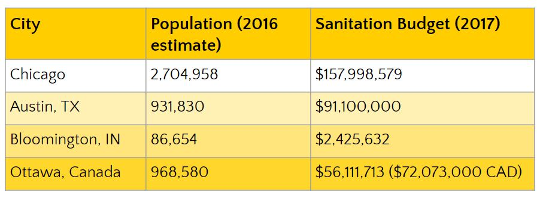
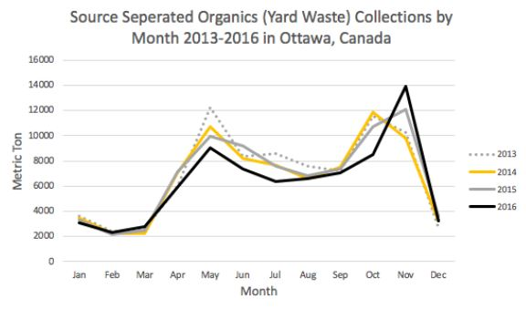

Here we explore Bloomington, Indiana; Austin, Texas, and Ottawa, Canada. All three cities collect yard waste on a regular basis with success, however their populations are quite different. 
Austin collects yard waste on a weekly basis from all residents.
Austin Resource Recovery’s $91.1 million budget provides a broad range of services, including:
Austin's 2016‐17 Operating budget represents an increase of $0.3 million and 25 new employees hired. The increase served to accomodate a growing customer base, enforce the city's Universal Recycling Ordinance, and start the Citywide organics collection program. Taxes are increased for residents as follows:
The additional charges should generate $90.5 million in revenue, which is $2.1 million more than the past year. Austin's 2016-2017 Capital budget reflects the supplies needed for the first year of citywide implementation of an organics collection program. The capital budget increased by $8.1 million for additional vehicles and equipment.
Austin provides their citizens with similar resources as our proposal, and charges their citizens a similar amount. Though Austin is much smaller than Chicago, by a factor of 9, their success in ultimately increasing revenue and decreasing waste indicates our proposal is realistic for success.
Bloomington is the smallest city we investigated, with a population just under 90,000. They collect yard waste bi-weekly during the months of April-December. While this method is successful for Bloomington, the amount of collections rarely exceeds 100 pickups per month, which is hardly comparable to Chicago.
Despite population differences, we are able to gain insight that regularly collecting yard waste is successful in reducing waste in landfills in Bloomington, and used this information to decided that scheduled pickups are ideal. The weather in Indiana is also the most similar to Chicago, which allows us to judge the more frequent months requring pickup. We have chosen more frequent pickups due to the higher population, but have emphasized the same months of the year.
Ottawa collects yard waste from green bins, paper bags, or cardboard boxes on a weekly basis. Ottawa has a population about 1/3 of the size of Chicago, and correspondingly has a budget of approximately 1/3 of Chicago's. With their program having similarities to our proposal, at a similar cost, we believe their success in collecting several thousand tons of waste each month indicates the potential of success of our program.
